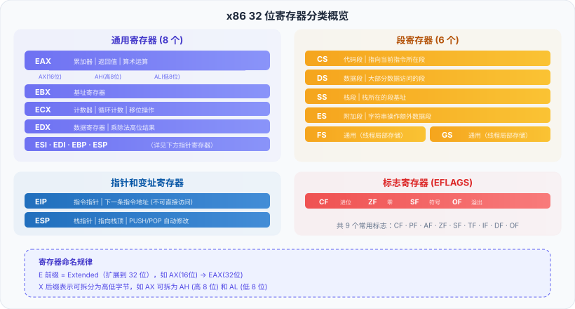

アセンブリ言語 - レジスタ
レジスタ（Register）はCPU内部の高速記憶ユニットであり、アセンブリプログラミングにおいて最も頻繁に操作される対象です。レジスタを理解することは、アセンブリ言語を学ぶための重要な第一歩です。
レジスタとは
レジスタはCPUチップ内部に集積されています。超高速小型存储器命令、データ、アドレスを一時的に格納するために使用される。
メモリとは異なり、レジスタはCPU内部に組み込まれており、CPUがレジスタにアクセスする際の遅延はほぼゼロですが、メモリへのアクセスには数十から数百クロックサイクルが必要です。
アセンブリ言語では、ほとんどの演算はレジスタを中心に展開される。データはメモリからレジスタにロードされ、レジスタ内で演算が行われ、その結果は再びメモリに格納される。
レジスタはCPUの「作業台」と理解できます。作業台の上にある工具はいつでも使えますが、メモリは倉庫のようなもので、そこまで行って取り出したり置いたりする必要があります。
x86 32ビットレジスタの分類
x86 32ビットアーキテクチャは、さまざまな種類のレジスタを提供しており、それぞれ異なる用途があります。下の図は、完全なレジスタの分類を示しています。

以下では、各種レジスタについて詳しく説明する。
通用寄存器
通用寄存器（General Purpose Registers）最も一般的に使用されるレジスタで、演算データや一時的な結果を格納するために使用される。
x86は8つの32ビット汎用レジスタを提供しています：
| 32位 | 16位 | 低8位 | 上位8ビット（下位16ビット） | 主要用途 |
|---|---|---|---|---|
| EAX | AX | AL | AH | アキュムレータ。関数の戻り値や算術演算の結果を格納する。 |
| EBX | BX | BL | BH | ベースレジスタ。メモリのベースアドレスを格納するために一般的に使用されます。 |
| ECX | CX | CL | CH | カウンタ。ループのカウントやシフトによく使用される。 |
| EDX | DX | DL | DH | データレジスタ。乗算・除算の上位結果を格納する。 |
| ESI | SI | SIL | - | ソースインデックスレジスタ。文字列操作のソースアドレスです。 |
| EDI | DI | DIL | - | デスティネーションインデックスレジスタ。文字列操作のターゲットアドレスです。 |
| EBP | BP | BPL | - | ベースポインタ、現在のスタックフレームの底を指す |
| ESP | SP | SPL | - | スタックポインタ。常にスタックの先頭を指す。 |
名前の規則：EプレフィックスはExtended（32ビットに拡張）を意味し、Xサフィックスは上位バイトと下位バイトに分割できることを意味します。
实例
; レジスタの各部分へのアクセスを実演する
section .text
global _start
_start:
mov eax, 0x12345678 ; 完全な32ビットレジスタ
; 此时：EAX = 0x12345678
; AX = 0x5678 (低 16 位)
; AH = 0x56 (上位8ビット、AXの上位8ビットを指す)
; AL = 0x78 (低 8 位)
mov ax, 0xAABB ; 修改 AX（低 16 位）
; 此时：EAX = 0x1234AABB (高 16 位保持不变！)
; AX = 0xAABB
; AL = 0xBB
mov al, 0xCC ; 修改 AL（最低 8 位）
; このとき: EAX = 0x1234AACC (低 8 ビットのみ変化)
; AX = 0xAACC
; AL = 0xCC
mov eax, 1
mov ebx, 0
int 0x80
32ビットレジスタの下位16ビット（AXなど）を変更する場合、上位16ビットは変更されません。しかし、32ビットレジスタをデスティネーションオペランドとして使用する場合、32ビット全体が上書きされます。これは初心者が間違いやすい点です。
段寄存器
セグメントレジスタは、現在使用しているメモリセグメントを指定するために使用されます：
| 寄存器 | 名称 | 用途 |
|---|---|---|
| CS | コードセグメントレジスタ | 現在の命令が存在するセグメントを指す。 |
| DS | データセグメントレジスタ | データが存在するセグメントを指す |
| SS | 栈段寄存器 | スタックが存在するセグメントを指す |
| ES | 追加セグメントレジスタ | 追加のデータセグメント |
| FS | 追加セグメントレジスタ | 汎用。スレッドローカルストレージによく使用される。 |
| GS | 追加セグメントレジスタ | 汎用。スレッドローカルストレージによく使用される。 |
32ビットプロテクトモードでプログラミングする場合、オペレーティングシステムがセグメントレジスタを設定済みであるため、通常は手動で変更する必要はありません。
ポインタとインデックスレジスタ
これらのレジスタは主にメモリへのアクセスに使用され、メモリアドレスを格納します：
| 寄存器 | 全称 | 用途 |
|---|---|---|
| EIP | 指令指针（Instruction Pointer） | CPUが次に実行する命令のアドレスを指します（直接アクセス不可）。 |
| ESP | 栈指针（Stack Pointer） | スタックの先頭を指し、PUSH/POP命令が自動的に調整します。 |
| EBP | ベースポインタ（Base Pointer） | 現在の関数のスタックフレームの底を指し、関数の引数やローカル変数にアクセスするために使用される。 |
| ESI | 源变址（Source Index） | 文字列/メモリ操作のソースアドレス |
| EDI | 目的インデックス（Destination Index） | 文字列/メモリ操作のターゲットアドレス |
ESPとEBPは、通常の汎用レジスタとして自由に使用することはできません。ESPはスタックの先頭を指し、push/pop/call/retはすべてESPを変更します。EBPは関数のパラメータにアクセスするための鍵です。これらをむやみに変更すると、プログラムがクラッシュする可能性があります。
フラグレジスタ（EFLAGS）
EFLAGS32ビットレジスタであり、各ビットが1つのステータスフラグ（Flag）を表します。
EFLAGS全体を直接読み書きすることはできないが、CPUは演算結果に応じてこれらのフラグを自動的に更新する。条件分岐命令はフラグに基づいて分岐するかどうかを決定する。
| 标志位 | 名称 | 含义 |
|---|---|---|
| CF | キャリーフラグ（Carry Flag） | 符号なし演算でキャリー/ボローが発生した場合に1がセットされます。 |
| PF | パリティフラグ（Parity Flag） | 結果の下位8ビットに含まれる1の数が偶数の場合に1に設定される。 |
| AF | 補助キャリーフラグ | 下位4ビットから上位4ビットへのキャリー/ボローが発生した場合に1がセットされます。 |
| ZF | ゼロフラグ（Zero Flag） | 演算結果が0のときに1を立てる |
| SF | 符号フラグ（Sign Flag） | 演算結果が負の場合に1に設定される（結果の最上位ビットに等しい）。 |
| OF | オーバーフローフラグ（Overflow Flag） | 符号付き演算でオーバーフローが発生した場合に1に設定される。 |
实例
; 演算がフラグにとえる影響を実演する
section .text
global _start
_start:
mov eax, 10
sub eax, 10 ; 10 - 10 = 0
; ZF = 1（結果はゼロ）
; SF = 0（结果非负）
; CF = 0（无借位）
mov eax, 0xFFFFFFFF
add eax, 1 ; 0xFFFFFFFF + 1 = 0x100000000（32ビットを超えています）
; ZF = 1（32ビットの結果が0）
; CF = 1（产生进位）
; OF = 0（有符号角度看无溢出）
mov eax, 1
mov ebx, 0
int 0x80
レジスタ使用の規約
実際のプログラミングでは、一部のレジスタには慣習的な使い方があります——これを调用约定（Calling Convention）：
| 寄存器 | 呼出規約における用途 |
|---|---|
| EAX | 関数の戻り値を格納する |
| ECX | カウンタ（ループ回数） |
| EDX | 除算の上位結果を格納し、EAXを拡張する。 |
| EBX、ESI、EDI、EBP | 呼び出された関数は保存および復元する必要があります（callee-saved）。 |
| EAX、ECX、EDX | 呼び出し元が保存を担当（caller-saved） |
其他扩展自分自身のアセンブリプログラムを作成する場合、必ずしも呼び出し規約を厳密に守る必要はありません。しかし、C言語と混在プログラミングを行う場合は、cdeclなどの呼び出し規約に従わなければなりません。